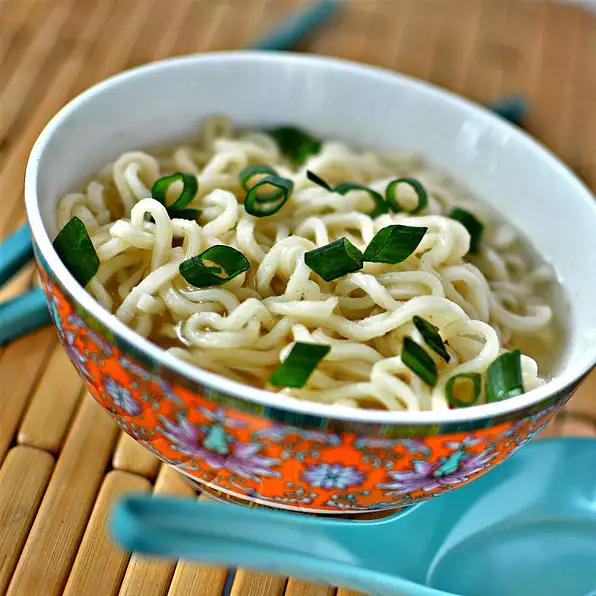

Ramen

Description
A quick recipe to help get rid of all the unnecessary chemicals of normal top ramen, while keeping the flavor.
Ingredients
- 2 cups water
- 1 (3 ounce) package instant ramen noodles (exclude seasoning packet)
- 2 tablespoons garlic powder
- 2 tablespoons onion powder
- 2 tablespoons ground ginger
- salt and ground black pepper to taste
Steps
- Bring 2 cups water to a boil in a saucepan.
- Cook noodles in boiling water until tender, about 3 minutes.
- Stir garlic powder, onion powder, and ginger into the noodles and water; season with salt and black pepper.